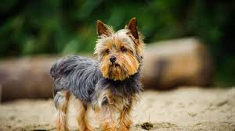
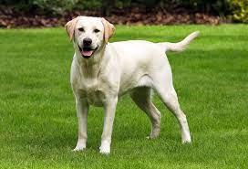
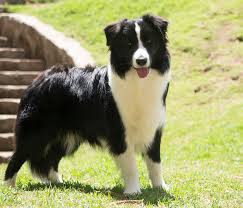

Aquí mostraremos algunos perros:
Este es un Yorkshire, suelen tener un tamaño pequeño, y suelen tener bastante carácter, a pesar de eso son cariñosos, y con un pelaje muy bonito
Este es un labrador, es un perro que suele ser grande, aunque es muy cariñoso, y energético, le encanta jugar.
Este es un border collie, su tamaño es similar al del labrador, es otro perro al que le encanta jugar, y sobre todo es una de las razas de perros más inteligentes
Volver a la página principal